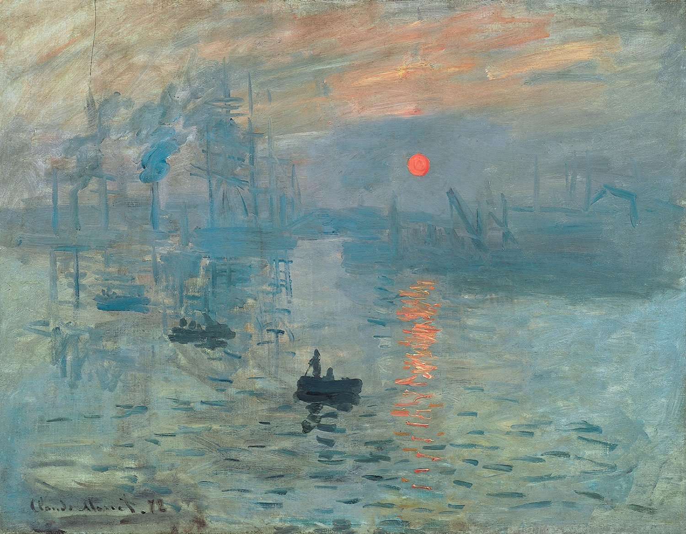

Claude Monet
Claude-Oscar Monet è stato un pittore francese, considerato uno dei fondatori dell'impressionismo francese e certamente il più coerente e prolifico del movimento.


Claude-Oscar Monet è stato un pittore francese, considerato uno dei fondatori dell'impressionismo francese e certamente il più coerente e prolifico del movimento.